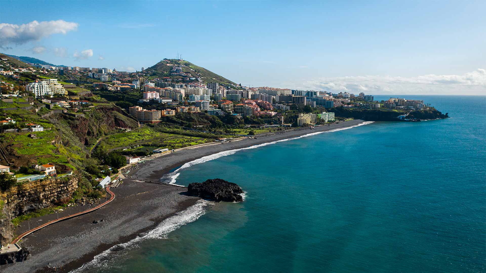
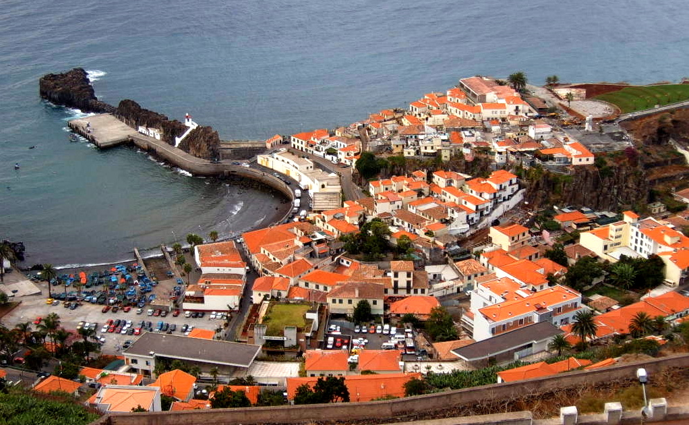
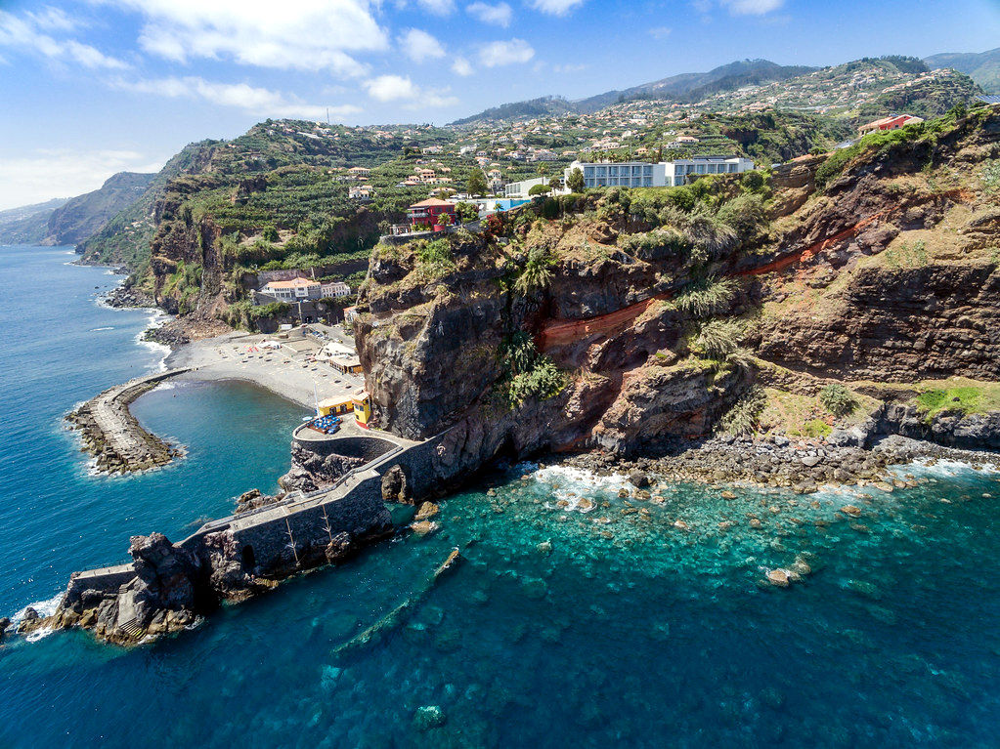

Atividades na Costa Sul

Praia Formosa
A maior praia do Funchal, ideal para relaxar junto ao mar.

Câmara de Lobos
Vila piscatória famosa pela poncha e pelas paisagens.

Ponta do Sol
Conhecida como a vila mais solarenga da Madeira.